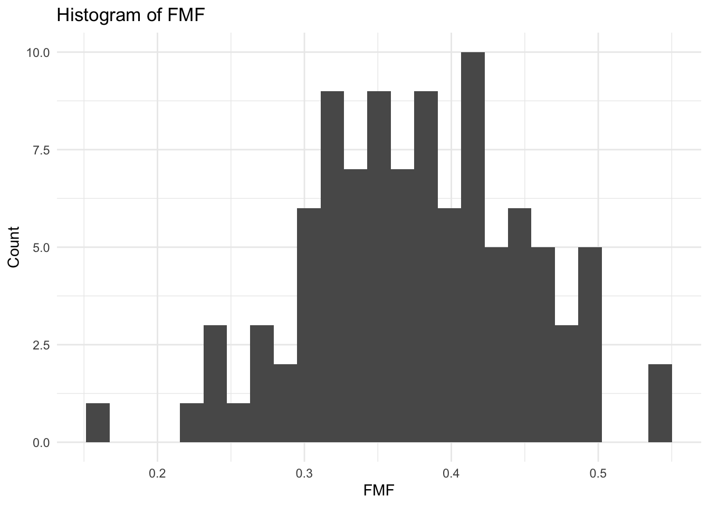

# Loads Sirtuin6 Small Molecules Dataset: The dataset includes 100 molecules with 6 most relevant descriptors to determine the candidate inhibitors of a target protein, Sirtuin6. The molecules are grouped based on their low- and high-BFEs.data <-read.csv(file =paste(getwd(), "/SIRTUIN6.csv", sep =""),header =TRUE,stringsAsFactors =FALSE)head(data)
DA (graphical and non-graphical representations of relationships between the response variable and predictor variables)
summary(data)
SC.5 SP.6 SHBd minHaaCH
Min. :0.08333 Min. :2.092 Min. :0.0000 Min. :0.0000
1st Qu.:0.28212 1st Qu.:3.345 1st Qu.:0.0000 1st Qu.:0.4298
Median :0.39335 Median :4.107 Median :0.3734 Median :0.4677
Mean :0.42049 Mean :4.429 Mean :0.3565 Mean :0.4436
3rd Qu.:0.53295 3rd Qu.:5.303 3rd Qu.:0.4825 3rd Qu.:0.5059
Max. :0.91855 Max. :7.642 Max. :1.4650 Max. :0.7207
maxwHBa FMF Class
Min. :0.000 Min. :0.1538 Length:100
1st Qu.:1.840 1st Qu.:0.3265 Class :character
Median :2.020 Median :0.3760 Mode :character
Mean :1.920 Mean :0.3762
3rd Qu.:2.162 3rd Qu.:0.4232
Max. :3.779 Max. :0.5366
table(data$Class)
High_BFE Low_BFE
50 50
predictors <-setdiff(names(data), "Class")# Loop through each predictor and print each histogramfor (var in predictors) { p <-ggplot(data, aes_string(x = var)) +geom_histogram(bins =25) +labs(title =paste("Histogram of", var),x = var,y ="Count" ) +theme_minimal()print(p)}

# Loop through each predictor and print each histogramboxplot(scale(select(data, -Class)))
Data wrangling and pre-processing (handling of missing values, outliers, correlated features, etc.)
# Center & scale all predictorspreProc <-preProcess(select(data, -Class), method =c("center","scale"))data_pp <-predict(preProc, select(data, -Class))data_pp$Class <- data$Class
Data splitting (training, validation, and test sets)
#80/20 Train Test Set Splitset.seed(123)trainIndex <-createDataPartition(data_pp$Class, p =0.8, list =FALSE)train <- data_pp[trainIndex, ]test <- data_pp[-trainIndex, ]table(train$Class); table(test$Class)
High_BFE Low_BFE
40 40
High_BFE Low_BFE
10 10
ctrl <-trainControl(method ="cv", number =5,classProbs =TRUE,summaryFunction = twoClassSummary,savePredictions =TRUE)#Models#Logistic Regression set.seed(123)lrFit <-train( Class ~ ., data = train,method ="glm",metric ="ROC",trControl = ctrl)lrFit
Generalized Linear Model
80 samples
6 predictor
2 classes: 'High_BFE', 'Low_BFE'
No pre-processing
Resampling: Cross-Validated (5 fold)
Summary of sample sizes: 64, 64, 64, 64, 64
Resampling results:
ROC Sens Spec
0.903125 0.775 0.875
# Random Forest set.seed(123)rfGrid <-expand.grid(mtry =2:15)rfFit <-train( Class ~ ., data = train,method="rf",metric ="ROC",trControl= ctrl,tuneGrid = rfGrid,ntree =500)rfFit
Random Forest
80 samples
6 predictor
2 classes: 'High_BFE', 'Low_BFE'
No pre-processing
Resampling: Cross-Validated (5 fold)
Summary of sample sizes: 64, 64, 64, 64, 64
Resampling results across tuning parameters:
mtry ROC Sens Spec
2 0.9031250 0.800 0.800
3 0.8968750 0.825 0.800
4 0.9000000 0.850 0.800
5 0.9109375 0.850 0.800
6 0.9125000 0.850 0.800
7 0.9140625 0.850 0.800
8 0.9140625 0.850 0.800
9 0.9156250 0.875 0.800
10 0.9140625 0.850 0.800
11 0.9171875 0.850 0.800
12 0.9062500 0.850 0.825
13 0.9125000 0.850 0.800
14 0.9171875 0.875 0.800
15 0.9171875 0.850 0.800
ROC was used to select the optimal model using the largest value.
The final value used for the model was mtry = 11.
Support Vector Machines with Radial Basis Function Kernel
80 samples
6 predictor
2 classes: 'High_BFE', 'Low_BFE'
No pre-processing
Resampling: Cross-Validated (5 fold)
Summary of sample sizes: 64, 64, 64, 64, 64
Resampling results across tuning parameters:
C sigma ROC Sens Spec
0.1 0.01 0.906250 0.800 0.850
0.1 0.05 0.890625 0.750 0.875
0.1 0.10 0.884375 0.725 0.875
1.0 0.01 0.906250 0.775 0.825
1.0 0.05 0.903125 0.750 0.900
1.0 0.10 0.890625 0.750 0.900
10.0 0.01 0.903125 0.725 0.875
10.0 0.05 0.865625 0.750 0.850
10.0 0.10 0.856250 0.825 0.800
ROC was used to select the optimal model using the largest value.
The final values used for the model were sigma = 0.01 and C = 0.1.